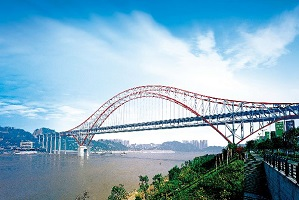

人人重庆——重庆徽标
重庆文化
重庆是中国著名的历史文化名城，具有3000多年的悠久历史，以重庆为中心的古巴渝地区是巴渝文化的发祥地，这片土地孕育了重庆悠久的历史。距今2至3万年的旧石器时代末期，已有人类生活在重庆地区。公元前11世纪商周时期，巴人以重庆为首府，建立了巴国。后秦灭巴国，分天下为三十六郡，巴郡为其一。
重庆，简称巴和渝，别称巴渝、山城、渝都、桥都，雾都，是中华人民共和国中央直辖市、国家中心城市、超大城市、世界温泉之都，长江上游地区经济中心、金融中心和创新中心，政治、文化、科技、教育、艺术等中心，国务院定位的国际大都市。中西部地区水、陆、空型综合交通枢纽。
重庆因嘉陵江古称“渝水”，故重庆简称“渝”。北宋崇宁元年（1102年），改渝州为恭州。南宋淳熙16年（1189年）正月，孝宗之子赵惇先封恭王，二月即帝位为宋光宗皇帝，称为“双重喜庆”，遂升恭州为重庆府，重庆由此而得名。
今日重庆
朝天门
朝天门之夜景

朝天门长江大桥
朝天门长江大桥
重庆人狭义上指生活在重庆主城九区的市民，主城九区包括：渝中区、江北区、南岸区、渝北区、九龙坡区、沙坪坝区、大渡口区、巴南区、北碚区。广义上包括生活在重庆直辖市38个区县范围内
的市民和外省移居重庆的新市民以及移居外省的居民。
重庆拥有中新（重庆）战略性互联互通示范项目、国家级新区——两江新区、渝新欧国际铁路，以及重庆两路寸滩保税港区、重庆西永综合保税区、重庆铁路保税物流中心、重庆南彭公路保税物流
中心、万州保税物流中心，过境72小时内免签，进口整车、水果、肉类、生鲜食品等口岸。
重庆的总人口计算分为城市核心区与都会区全区，其中若以都会区全区（3,235万）计算，则其为世界人口最多的城市，也列中国四大直辖市之最，但国际一般以城市核心区人口作为排名依据。